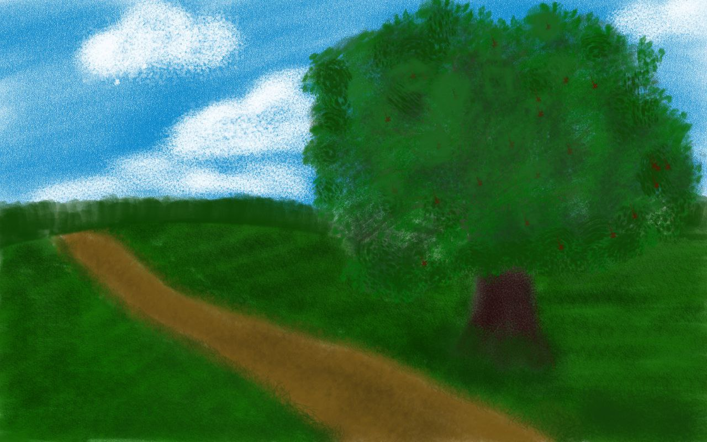

Дуб
У Вінницькій області зустрічаються кілька видів дубів, включаючи червоний дуб та північний дуб. Ці дуби відрізняються не лише за видами, але й за особливостями росту. Дуби зазвичай поділяють на дві форми: ранні та пізні. Ранні дуби розпускають листя навесні, яке зріє і опадає восени. Натомість пізні дуби розвивають листя пізніше, яке залишається на гілках протягом зими, створюючи унікальне видовище у холодні місяці.
Різноманітність дубів у цьому регіоні, разом із їхніми різними життєвими циклами, підкреслює їхню адаптивність і стійкість, роблячи значний внесок в екологічний баланс та природну красу лісів Вінниччини.